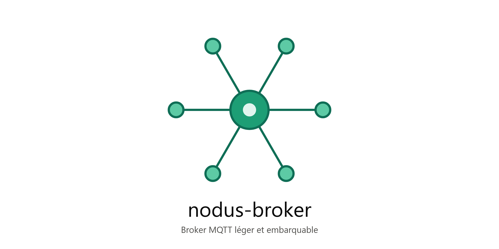

Documentation nodus-broker

nodus-broker est un broker MQTT développé en C# sur .NET 9 et fondé sur MQTTnet. Il est destiné aux applications industrielles, aux bancs de test et aux systèmes embarqués nécessitant un broker local léger.
Cette documentation couvre l'installation, la configuration, l'utilisation, la sécurité et les tests des différents composants du dépôt.
Composants du projet
| Composant | Rôle |
|---|---|
nodus-broker |
Broker MQTT principal, intégré à ASP.NET Core. Il accepte les connexions TCP, TLS et WebSocket. |
bg-nodus-broker |
Lanceur qui démarre ou arrête le broker et permet de sélectionner un fichier de configuration. |
nodus-cli |
Client MQTT en ligne de commande pour publier des messages, s'abonner à des topics et valider le comportement du broker. |
PasswordHashGenerator |
Outil interactif de génération des empreintes de mots de passe PBKDF2 utilisées par le broker. |
nodus-broker.Tests |
Tests unitaires et tests d'intégration du broker. |
Fonctionnalités du broker
- Prise en charge de MQTTnet 5.2 et du protocole MQTT.
- Transport TCP natif sur le port configuré.
- Transport MQTT over TLS avec un certificat X.509 au format PFX.
- Transport MQTT sur WebSocket, avec prise en charge facultative de TLS.
- Authentification selon deux modes :
Credentials: contrôle du nom d'utilisateur et du mot de passe ;Anonymous: aucune vérification d'identifiants, avec attribution de rôles configurables.
- Contrôle des droits
PUBLISHetSUBSCRIBEpar rôle et par topic. - Prise en charge des wildcards MQTT
+et#ainsi que du placeholder{clientid}. - Protection anti force brute avec verrouillage temporaire des adresses IP.
- Sessions persistantes et files de connexion configurables.
- Publication d'informations d'état du broker sur des topics internes.
Prérequis
- .NET 9 SDK pour compiler les projets.
- .NET 9 Runtime pour exécuter un livrable dépendant du framework.
- Node.js et npm uniquement si les outils de build Node.js du dépôt sont utilisés.
- Un certificat PFX pour activer le transport TLS.
Compiler les projets
La commande suivante lancée depuis la racine du dépôt permet de générer dans le répertoire dist les executables nodus-broker et bg-nodus-broker sous différentes architectures (win-x86, win-x64 et linux-x64)
gendist.bat
Les commandes suivantes sont lancées depuis la racine du dépôt et permettent de générer séparément les executables.
# Broker MQTT
dotnet build src/nodus-broker/nodus-broker.csproj -c Release
# Lanceur du broker
dotnet build src/bg-nodus-broker/bg-nodus-broker.csproj -c Release
# Client en ligne de commande
dotnet build src/nodus-cli/nodus-cli.csproj -c Release
# Exécutable de tests
dotnet build tests/nodus-broker.Tests/nodus-broker.Tests.csproj -c Release
Pour produire un exécutable autonome destiné à une machine sans runtime .NET installé :
dotnet publish src/nodus-broker/nodus-broker.csproj `
-c Release `
-r win-x64 `
--self-contained true `
-o dist/nodus-broker
dotnet publish src/bg-nodus-broker/bg-nodus-broker.csproj `
-c Release `
-r win-x64 `
--self-contained true `
-o dist/bg-nodus-broker
dotnet publish src/nodus-cli/nodus-cli.csproj `
-c Release `
-r win-x64 `
--self-contained true `
-o dist/nodus-cli
Démarrer le broker
Utilisation directe
Sans argument, nodus-broker charge le fichier appsettings.json situé dans son répertoire de travail.
cd src/nodus-broker
dotnet run
Un autre fichier de configuration peut être sélectionné avec --config ou -c :
dotnet run --project src/nodus-broker -- --config "C:\config\production.json"
dotnet run --project src/nodus-broker -- -c "../configs/site-a.json"
Si le fichier indiqué est introuvable, le broker écrit un message d'erreur et termine le processus avec le code de sortie 1.
Utilisation du lanceur
bg-nodus-broker démarre le broker dans un processus séparé. Il accepte également une configuration personnalisée :
# Configuration par défaut
dotnet run --project src/bg-nodus-broker
# Configuration personnalisée
dotnet run --project src/bg-nodus-broker -- --config "C:\config\production.json"
dotnet run --project src/bg-nodus-broker -- -c "C:\config\test.json"
# Arrêt des processus du broker
dotnet run --project src/bg-nodus-broker -- --stop
Le lanceur vérifie l'existence du fichier de configuration avant de démarrer le broker.
Configuration
Le broker attend un fichier JSON structuré autour des sections Mqtt, Auth, Security et Acl. Exemple :
{
"Mqtt": {
"Port": 1883,
"TlsPort": 8883,
"EnableTls": false,
"CertificatePath": "",
"CertificatePassword": "",
"ConnectionBacklog": 100,
"MaxConnections": 500,
"PersistentSessions": true,
"WebSocket": {
"Enable": false,
"Port": 8080,
"Path": "/mqtt",
"EnableTls": false,
"TlsPort": 8081
}
},
"Auth": {
"Mode": "Credentials",
"AnonymousRoles": [],
"Users": [
{
"Username": "device01",
"PasswordHash": "<salt-base64>.<hash-base64>",
"Roles": [ "device" ]
}
]
},
"Security": {
"MaxFailedAttemptsPerIp": 5,
"LockoutDurationSeconds": 60
},
"Acl": {
"device": [
{
"TopicPattern": "device/{clientid}/#",
"Publish": true,
"Subscribe": true
}
]
}
}
Transports réseau
| Option | Description | Valeur par défaut |
|---|---|---|
Mqtt:Port |
Port du transport MQTT TCP | 1883 |
Mqtt:TlsPort |
Port du transport MQTT TLS | 8883 |
Mqtt:EnableTls |
Active le transport TLS | false |
Mqtt:ConnectionBacklog |
Taille de la file d'attente des connexions | 100 |
Mqtt:MaxConnections |
Nombre maximal de connexions configuré | 500 |
Mqtt:PersistentSessions |
Active les sessions persistantes | true |
Mqtt:WebSocket:Enable |
Active le transport WebSocket | false |
Mqtt:WebSocket:Port |
Port HTTP du transport WebSocket | 8080 |
Mqtt:WebSocket:Path |
Chemin de l'endpoint WebSocket | /mqtt |
Mqtt:WebSocket:TlsPort |
Port HTTPS du transport WebSocket | 8081 |
Authentification et rôles
En mode Credentials, chaque entrée de Auth:Users définit un Username, un PasswordHash et une liste de Roles.
En mode Anonymous, le broker n'exige pas d'identifiants. Les rôles définis dans Auth:AnonymousRoles sont néanmoins utilisés pour évaluer les règles ACL.
Règles ACL
Une règle ACL associe un rôle à un TopicPattern :
Publishautorise ou refuse la publication ;Subscribeautorise ou refuse l'abonnement ;+correspond à exactement un niveau de topic ;#correspond à zéro ou plusieurs niveaux ;{clientid}est remplacé par l'identifiant du client.
Générer un hash de mot de passe
L'outil PasswordHashGenerator demande interactivement un nom d'utilisateur et un mot de passe masqué. Le hash produit est au format {salt_base64}.{hash_base64} et peut être copié dans Auth:Users.
dotnet run --project tools/PasswordHashGenerator
L'algorithme utilise PBKDF2-HMAC-SHA256 avec 100 000 itérations, un sel de 16 octets et un condensat de 32 octets.
Utiliser nodus-cli
Publier un message
nodus-cli publish -t "sensor/temperature" -m "23.5"
nodus-cli publish -h "192.168.1.10" -p 1883 -t "sensor/humidity" -m "60"
nodus-cli publish -t "device01/status" -m "online" -q 1 -r
nodus-cli publish -t "secure/data" -m "message" -u "device01" -P "password"
S'abonner à des messages
nodus-cli subscribe -t "sensor/#"
nodus-cli subscribe -t "sensor/+/temperature" -t "device/+/status"
nodus-cli subscribe -t "sensor/#" -u "monitoring" -P "password" -q 1
Le client affiche le topic et la charge utile de chaque message reçu. Son fonctionnement interactif s'interrompt avec Ctrl+C.
Sécurité
- Utiliser le mode
Credentialspour un déploiement exposant le broker à des clients non fiables. - Ne pas stocker de mot de passe en clair dans un fichier de configuration.
- Protéger le fichier contenant les empreintes et le certificat PFX.
- Restreindre les rôles et les topics au strict nécessaire.
- Activer TLS lorsque les connexions traversent un réseau non maîtrisé.
- Ne pas exposer les topics internes du broker aux clients non administrateurs.
- Ajuster la protection anti force brute en fonction de l'environnement d'exploitation.
Tests
Tests unitaires
Les tests de sécurité ne nécessitent pas de broker actif :
dotnet test tests/nodus-broker.Tests/nodus-broker.Tests.csproj `
--filter "FullyQualifiedName~Security"
Ils couvrent notamment :
- la génération et la vérification des empreintes PBKDF2 ;
- le seuil et l'expiration du verrouillage anti force brute ;
- l'évaluation des règles ACL et des wildcards MQTT.
Tests d'intégration
Les tests d'intégration utilisent un broker accessible sur localhost:1883. Le broker doit être démarré dans un autre terminal avec une configuration compatible :
# Terminal 1
dotnet run --project src/nodus-broker
# Terminal 2
dotnet test tests/nodus-broker.Tests/nodus-broker.Tests.csproj `
--filter "FullyQualifiedName~Integration"
Pour produire un rapport de couverture :
dotnet test tests/nodus-broker.Tests/nodus-broker.Tests.csproj `
--collect:"XPlat Code Coverage"
Documentation de l'API
La référence API contient les types et membres publics extraits par DocFX à partir des commentaires XML du code source. Les principaux points d'entrée sont :
- MqttBrokerService : orchestration du broker, de l'authentification et des contrôles ACL ;
- MqttBrokerHostedService : intégration du broker dans le cycle de vie de l'hôte ASP.NET Core ;
- TopicAclValidator : évaluation des droits de publication et d'abonnement ;
- BruteForceGuard : protection anti force brute ;
- PasswordHasher : génération et vérification des empreintes PBKDF2 ;
- BrokerLauncher : démarrage et arrêt du broker par le lanceur.
Générer cette documentation
Depuis la racine du dépôt :
docfx tools/docfx/docfx.json
Le site généré se trouve dans doc/_site. Pour le consulter localement :
docfx serve tools/docfx/docfx.json
Licence
Le projet est distribué sous licence MIT. Le texte complet de la licence est disponible dans le fichier LICENSE à la racine du dépôt.